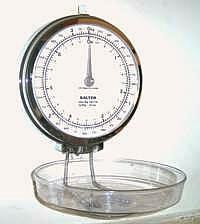
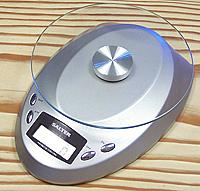

Ingredients

Search
CloveGarden
SAFARI
Users
|
|
|
|
Abbreviations
#=Pound, oz=Ounce, t=teaspoon, T=tablespoon,
c=cup, pt=pint, qt=quart, in=inch,
cl=clove, ar=as required, tt=to taste
Cup
| oz | Tbl | tspn | Other | Metric |
|---|
| 4 | 32 |
|
| 1 Quart | 1 Litre (scant) |
| 2 | 16 |
|
| 1 Pint | 500 ml |
| 1 | 8 |
|
| 1/2 Pint | 250 ml |
| 3/4 | 6 |
|
|
| 185 ml |
| 2/3 | 5.3 | 11 |
|
| 165 ml |
| 1/2 | 4 | 8 | 24 |
| 125 ml |
| 1/3 | 2.5 | 5.3 | 16 |
| 80 ml |
| 1/4 | 2 | 4 | 12 |
| 60 ml |
| 1/8 | 1 | 2 | 6 |
| 30 ml |
Weights
| Pound | Ounce | Metric |
|---|
| 1 | 16 | 450 g (scant 1/2 kg) |
| 1/2 | 8 | 230 g (scant 1/4 kg) |
| 1/4 | 4 | 120 g |
| 1 | 30 g |
| 1/2 | 15 g |
| 1/4 | 8 g (scant) |
| 1/8 | 4 g (scant) |

As a general purpose scale I use the Salter 7# wall scale.
It's always ready, keeps precious counter space clear and is graduated in U.S.
and Metric for easy conversion. The tray removes easily so you can pour stuff
out of it and it folds up over the face when you aren't using it.

Modern electronic scales are very accurate for small amounts and offer the
convenience of tare weight (canceling the weight of the container to show
only the weight of its contents). Unfortunately they all take counter space
but I keep a Salter #6300 close at hand. I like it's tiny size, clean looks,
simplicity and ease of cleaning.
Traditional & Other
| Name | Sane | Metric |
|---|
| Dash | 1/16 tsp | 0.25 ml |
| Gill | 1/2 cup | 120 ml |
| Glass | 1 cup | 250 ml |
| Jigger | 1-1/2 oz | 45 ml |
| Measure | 1 Jigger | 45 ml |
| Pinch | 1/8 tsp | 0.5 ml |
| Seer / Sihr (India) | 2.06# | 934 gm |
| Katori/ Bowl (India) | 2/3 cup | 150 ml |
| Chittak (India) | 2 oz | 58 gm |
| Seer / Sihr (Iran) | 2.6 oz | 74 gm |
|
Tablespoon
| oz | tspn | Metric | Other |
|---|
| 4 | 2 | 1/4c | 60 ml |
|
| 1-1/3 |
| 4 | 20 ml | 1 Tbl Australia |
| 1-1/4 |
| 3-1/2 | 18 ml | 1 Tbl UK |
| 1 | 1/2 | 3 | 15 ml |
|
| 2/3 | 1/3 | 2 | 10 ml |
|
| 1/2 | 1/4 | 1.5 | 8 ml |
|
| 1/3 | 0.17 | 1 | 5 ml |
|
|
Teaspoon
| oz | Tbl | Metic | Other |
|---|
| 4 |
|
| 20 ml | 1 Tbl Australia |
3-1/2
|
|
| 18 ml | 1 Tbl UK |
| 3 | 1/2 | 1 | 15 ml |
|
| 2-1/2 |
|
| 12 ml | Desertspoon UK |
| 2 |
| 2/3 | 10 ml |
|
| 1-1/4 | 1/5 | .41 | 6 ml | Heaping Tsp. |
| 1 | 1/6 | 1/3 | 5 ml |
|
| 1/2 |
|
| 2 ml |
|
| 1/4 |
|
| 1 ml |
|
| 1/8 |
|
| 0.5 ml |
|
|
Temperature
| °F | °C | gas
mark | Other |
|---|
| 550+ |
|
| Broil |
| 550 | 290 |
|
|
| 500 | 260 |
|
|
| 475 | 240 | 9 | Very Hot |
| 450 | 230 | 8 | Hot |
| 425 | 220 | 7 | Hot |
| 400 | 200 | 6 | Mod Hot |
| 375 | 190 | 5 | Mod Hot |
| 350 | 180 | 4 | Moderate |
| 325 | 165 | 3 | Moderate |
| 300 | 150 | 2 | Slow |
| 275 | 140 | 1 | Slow |
| 250 | 125 | 1/2 | Very Slow |
| 225 | 110 | 1/4 | Very Slow |
| 212 | 100 |
| Boiling |
| 200 | 90 |
| Low |
| 140 | 60 |
| Low |
| 72 | 22 |
| Room |
| 64 | 18 |
| Cellar |
| 34 | 1 |
| Fridge |
| 32 | 0 |
| Freezing |
| 0 | -18 |
| Freezer |
|
|